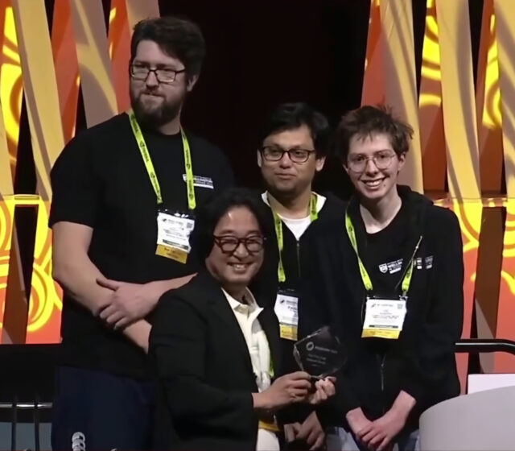
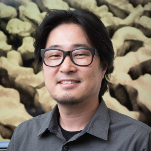

Image Credit: All rights reserved by the Computational Media Innovation Centre, Victoria University of Wellington, New Zealand.
Real-Time Live! is where the stage meets the screens. SIGGRAPH 2023 Real-Time Live! selection “Real-time Stage Modelling and Visual Effects for Live Performances” took home this year’s Audience Choice award thanks to their show-stopping visual effects, creative interaction between real and virtual performers, and excellent ability to showcase real-time 3D modeling — plus, killer whales! SIGGRAPH caught up with contributor Taehyun Rhee to discuss how this demo came to life, the challenges the team encountered, and what’s to come with this next-level technology.
SIGGRAPH: Congratulations on winning the SIGGRAPH 2023 Real-Time Live! Audience Choice award! Share some background on your winning demo. What was the inspiration behind your work?
{kind=link}

Taehyun Rhee (TR): Thank you! We are delighted to have received the Real-Time Live! Audience Choice award at SIGGRAPH 2023. This recognition is particularly special to us as it is based on live votes from both the in-person and online audiences. Our journey with Real-Time Live! began in 2018, and this marks our fifth performance, spanning both SIGGRAPH and SIGGRAPH Asia events.
Our inspiration for this project lies in the desire to revolutionize live performances using real-time computer graphics and visual effects. We envisioned a platform that could break free from traditional pipelines, typically designed for recorded media like films, and instead, offer a dynamic stage where artists, producers, and media engineers can seamlessly blend the real and the virtual. This innovation is driven by the need for richer interactions between performers and audiences, as well as between the physical and digital worlds.
The development of this platform gained momentum during the COVID-19 pandemic when physical presence at live events became challenging. Consequently, we embarked on creating a real-time live platform capable of capturing, streaming, rendering, and facilitating interaction remotely, without the need for physical attendance. Our current demo is a part of this broader telepresence initiative called “Televerse,” designed for immersive telepresence and telecommunication, including live event and concert scenarios.
SIGGRAPH: Your demo showcased real-time 3D modeling, rendering, and blending of assets, as well as interaction between real and virtual performers. With all of these moving parts, did you encounter any challenges during the project’s creation?
TR: Absolutely. Developing this project presented us with a series of technical challenges. Our goal was to transform the traditional pipeline designed for recorded media into an interactive platform, offering a seamless blend of the real and virtual worlds, encompassing both appearance and interaction. This required innovation in three key areas: immersion, interactivity, and intelligence within computer graphics and visual effects.
Our performance builds upon a decade of our prior research, spanning over 20 peer-reviewed conference and journal papers. While we’ve made significant strides, we believe we are still in the midst of our journey. We anticipate exciting research opportunities and collaborations to further enhance and adapt our technologies for immersive and interactive events and storytelling.
SIGGRAPH: What’s next for this technology? How do you imagine it will evolve? How do you anticipate others using it for live performances?
TR: We see two promising directions for the future of this technology following our demonstration at SIGGRAPH 2023. First, we are seeking opportunities for case studies to apply our platform to real-live events such as concerts, offering richer and more immersive stage performances enhanced with live visual effects. In this scenario, real performers can interact with virtual performers (e.g., virtual choreographers on stage), blending various live visual effects seamlessly. This approach aims to recreate the sensation of attending a live concert while introducing the artistic possibilities of computer graphics and visual effects.
The second direction involves live streaming these performances through high-speed internet. Our framework is rooted in real-time and live technology, from capture to visualization. By doing so, we can accommodate virtual audiences during concerts and events, offering an immersive telepresence experience that goes far beyond current video conferencing solutions. Through augmented 360 panoramic video streaming, our framework creates an augmented digital twin of the real world, accessible remotely. This enables people to teleport virtually, augment their telepresence, and engage in creative and immersive communication and storytelling with on-site performers and audiences.
While we have developed key solutions for essential components, our goal is challenging and still requires additional research and development to be implemented in real events. We are open to collaboration on research problem-solving, case studies for live events, and exploring potential tech transfer opportunities to create a more widely accessible platform.
SIGGRAPH: What was your favorite part of participating in Real-Time Live! at the SIGGRAPH 2023?
TR: Participating in Real-Time Live! at SIGGRAPH 2023 was a true highlight for me. It is one of my favorite events within SIGGRAPH, as it encapsulates the perfect blend of cutting-edge technology, creative storytelling, and direct audience interaction. The condensed format of a six-minute live media show creates a dynamic and intense atmosphere.
Behind the scenes, there’s a palpable sense of tension and stress for all the performing teams, but that energy translates into an incredible live show on stage. The opportunity to showcase our work in this format is a unique and rewarding experience.
SIGGRAPH: What advice do you have for those submitting to Real-Time Live! in the future?
TR: I believe that media technology is rapidly advancing toward real-time and live media platforms and content. The Real-Time Live! program serves as a powerful platform to showcase the latest advancements in media technology and performance to both in-person and online audiences. It is the ideal place to highlight your research and creativity while gaining significant visibility.
While preparing a live show for Real-Time Live! undoubtedly demands effort and time, the experience is truly worth it. Collaborating with other performers; working closely with the committee, chairs, and stage experts; and engaging with live audiences is an invaluable experience. Being on the stage as the main performer, whether you’re a researcher, programmer, engineer, designer, or student, is a unique opportunity. Real-Time Live! is not only fun, but it’s also a bit addictive, as the experience of performing on stage is unlike any other.
Best of luck to future participants, and I look forward to witnessing their innovative contributions on the Real-Time Live! stage!
Stay connected on all things SIGGRAPH! Sign up for our mailing list to receive important updates on registration, industry news, and program submissions — including Real-Time Live!
{kind=link}

A. Prof. Taehyun James (TJ) Rhee is a director of the Computational Media Innovation Centre and the co-founder of Computer Graphics degrees at Victoria University of Wellington. With over 25 years of experience in the immersive and interactive media sector, he has worked in both academia and industry (including 17 years in Samsung) and published numerous top-tier papers and patents. He has demonstrated leadership in the computer graphics community as the VRAR Programme Chair at SIGGRAPH Asia 2018, General Chair at Pacific Graphics 2020 and 2021, and Executive Committee of Asia Graphics Association. Prof. Rhee also presented live demos in various venues including Real-Time Live! at SIGGRAPH 2018, SIGGRAPH 2021, and SIGGRAPH 2023, as well as SIGGRAPH Asia 2018 and 2022. His current research focus is to advance immersive, interactive, and intelligent media technologies for augmented telepresence, digital twins, and live visual effects.
{kind=link}
Dr. Andrew Chalmers is a research fellow at the Computational Media Innovation Centre, Victoria University of Wellington. He specializes in lighting and reflectance modelling, virtual and augmented reality, and real-time rendering. Dr. Chalmers has contributed to the computer graphics community as a Local Chair for Pacific Graphics 2020 and 2021 and as a Programme Committee member for both SIGGRAPH Asia 2018 and AIVR 2020. He has presented his research papers and live demonstrations at numerous venues, including Real-time Live! at SIGGRAPH and SIGGRAPH Asia. His current research focuses on digital twins and virtual telepresence.
{kind=link}
Faisal Zaman is in the final year of his Ph.D. studies at the Computational Media Innovation Centre, Victoria University of Wellington, focusing on developing a multi-user mixed-reality collaboration system.
{kind=link}
Anna Stangnes recently completed her master’s in computer graphics and is now a research assistant at the Computational Media Innovation Centre. Her research areas include reflectance modelling and digital twins.
{kind=link}
Vic Roberts is a research assistant at the Computational Media Innovation Centre who is currently finishing honors in computer graphics at Victoria University of Wellington.